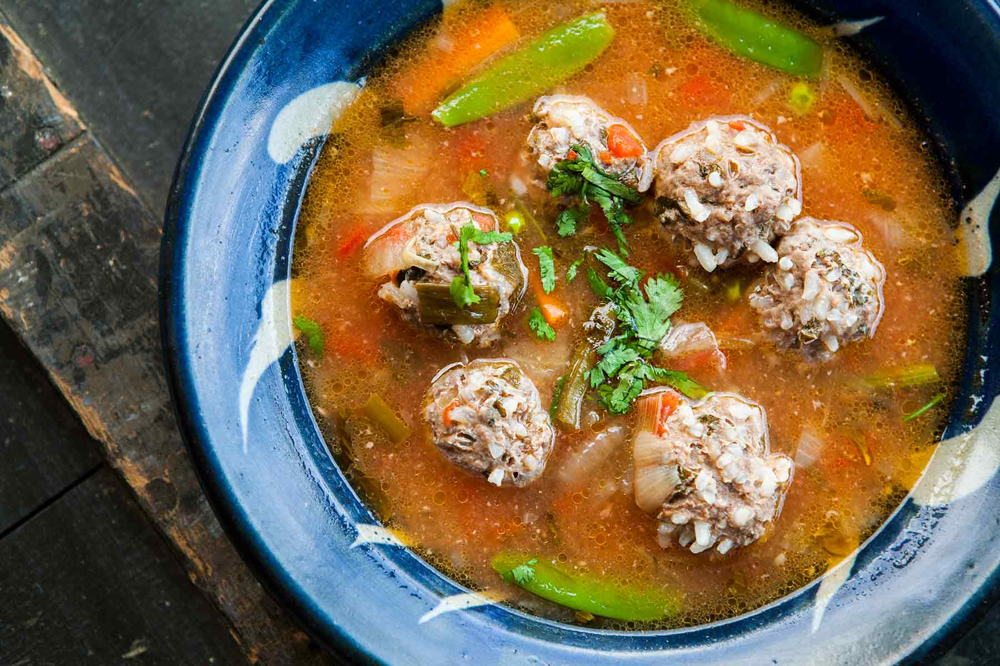

<div class="browse-window container-fluid">
  <div class="recipe-card">
    <div class="recipe-card-header"><h4>Albondigas</h4></div>
    <div class="recipe-card-body">
      
      <div class="time">
        <p class="time-font glyphicon glyphicon-time"></p>
        <p>Cook Time: 45 min.</p>
      </div>
      <p>Description: Gumbo beet greens corn soko endive gumbo gourd. Parsley shallot courgette tatsoi pea sprouts fava bean collard greens dandelion okra wakame tomato. Dandelion cucumber earthnut pea peanut soko zucchini.</p>
    </div>
  </div>
</div>

